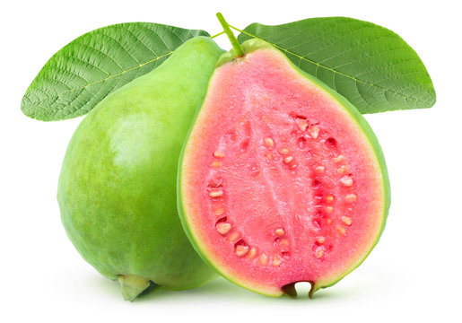

Freshness You Can Trust

Guava is a delicious and highly nutritious tropical fruit that is rich in vitamin C, vitamin A, dietary fiber, potassium, folate, and antioxidants. It helps strengthen the immune system, improves digestion, supports heart health, regulates blood sugar levels, and promotes healthy skin. Guava is low in calories and high in nutrients, making it an excellent fruit for daily consumption. It can be enjoyed fresh, as juice, in fruit salads, smoothies, or desserts.